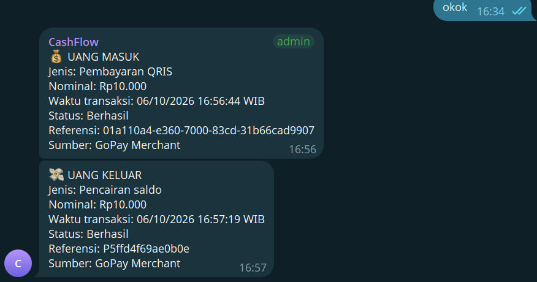
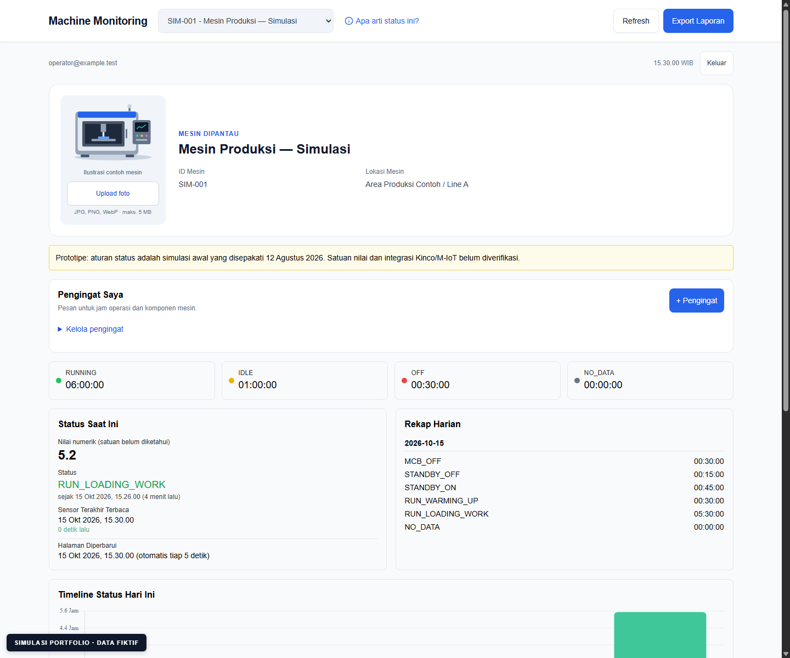
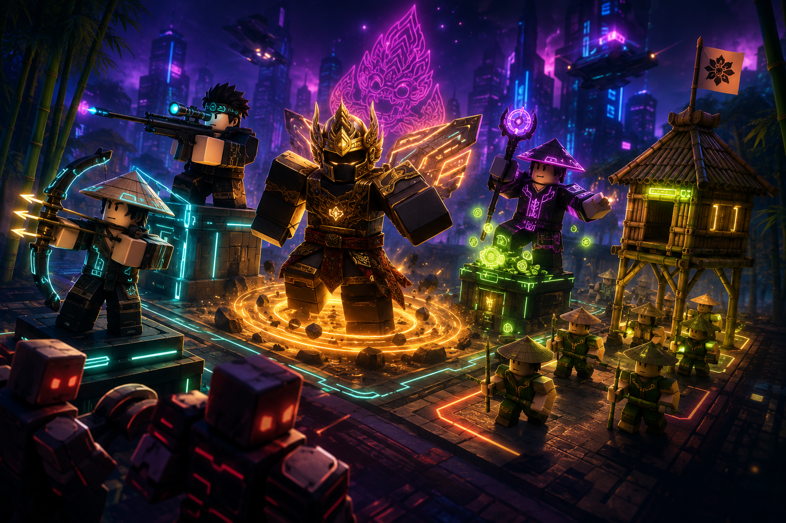
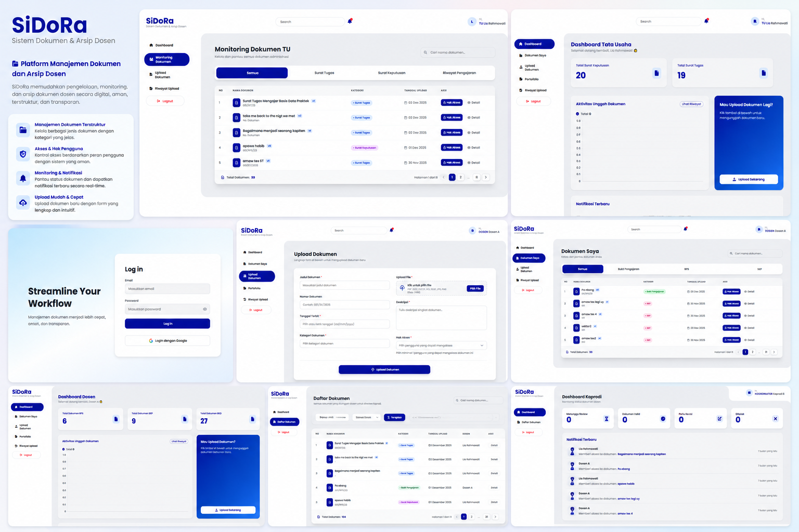
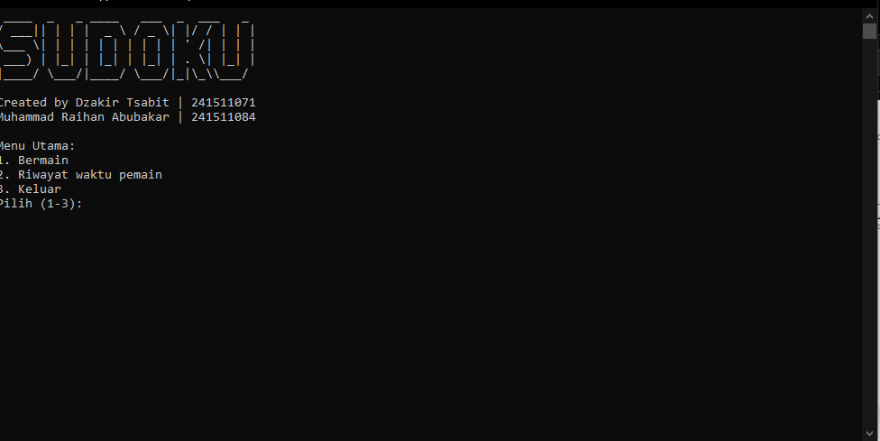

BELAJAR. MEMBANGUN. BERTUMBUH.
مَنْ جَدَّ وَجَدَ
Barang siapa yang bersungguh-sungguh, maka ia akan berhasil
Halo, saya Dzakir. Mahasiswa Teknik Informatika di Polban yang senang membangun web, game, dan otomasi untuk menyelesaikan masalah nyata.
01 / SELECTED WORK
Dibangun dengan rasa ingin tahu.
Dari logika permainan hingga alur kerja otomatis. Berikut beberapa hal yang sudah saya bangun.

CashFlow Telegram Transaction Notifier
Bot untuk client yang mengirim notifikasi pembayaran QRIS masuk dan pencairan saldo GoPay Merchant ke Telegram. Dilengkapi penyimpanan SQLite, pencegahan notifikasi duplikat, dan penanganan pengiriman ulang.

OCR WhatsApp Donation Automation
Otomasi pembacaan bukti transfer WhatsApp dengan PaddleOCR, pilihan program donasi, pengecekan duplikat, dan pencatatan data sambil menunggu konfirmasi mutasi bank.

Machine Monitoring Dashboard
Prototipe dashboard untuk memantau status dan durasi operasi mesin, membaca riwayat, mengatur pengingat perawatan, serta mengekspor laporan harian. Preview memakai data simulasi.

Bloxantara Defense
Game tower defense di Roblox. Pemain menempatkan unit pertahanan, mengatur sumber daya, dan menghadapi gelombang musuh yang terus meningkat.

SiDoRa (Sistem Dokumen Dosen)
SiDoRa membantu dosen dan Tata Usaha mengunggah, mengelola, dan memantau dokumen administrasi dalam satu tempat.

Game Tetris (C & Raylib)
Implementasi Tetris dengan C dan Raylib. Saya menangani logika giliran, bentuk balok, grid permainan, deteksi tabrakan, penghapusan baris, dan tampilan 2D.

Game Turn-Based
Game turn-based berbasis Java yang saya gunakan untuk mempraktikkan pengelolaan giliran, aturan permainan, dan pemisahan logika dari tampilan.

Permainan Sudoku Terminal
Program Sudoku berbasis terminal yang saya kerjakan untuk mata kuliah Dasar-Dasar Pemrograman. Fokusnya adalah pengolahan papan, validasi langkah, dan beberapa tingkat kesulitan.
02 / A LITTLE ABOUT ME
“Saya tidak punya bakat istimewa. Saya hanya memiliki rasa ingin tahu yang besar.”
— Albert Einstein
Terakhir diperbarui:
Saya menikmati proses mengubah masalah yang jelas menjadi program yang bisa dipakai dan dipelihara.
Saya Dzakir Tsabit, mahasiswa Teknik Informatika semester 5 di Politeknik Negeri Bandung. Saat ini saya memperdalam pemrograman, pengembangan perangkat lunak, serta cara merancang sistem yang mudah digunakan.
Saya belajar melalui tugas kuliah, proyek bersama, dan eksperimen kecil. Setiap proyek membantu saya memahami cara kerja perangkat lunak dari perencanaan sampai pengujian.
Peralatan di balik pertempuran.
TEKNOLOGI YANG SAYA GUNAKANWeb Development
Programming Languages
Databases
Tools & OS
Game Development
Cybersecurity & Net
Mobile Development
AI & Machine Learning
03 / ELSEWHERE ON THE INTERNET
Tetap terhubung.
Karya, perjalanan belajar, dan sedikit keseharian.
HAVE SOMETHING IN MIND?
Ide bagus dimulai
dari percakapan.
Punya ide, pertanyaan, atau ingin bertukar cerita? Saya senang mendengarnya.
Kirim email ↗WhatsApp ↗Telegram ↗